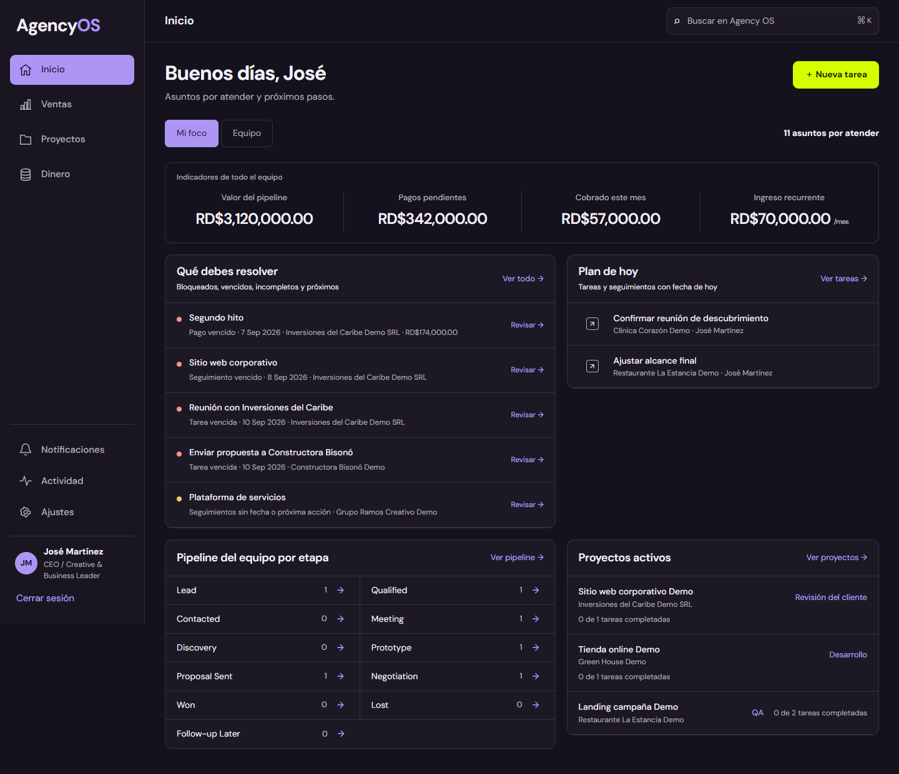

Reservas y pagos
Sebelén Torneos
Sistema para gestionar cupos, reservas temporales y pagos de torneos de boliche.
Ver caso ↗José Rivas · Santo Domingo, RD
Desarrollo sitios web y sistemas a medida para negocios que quieren vender, organizarse y operar mejor.

Trabajo seleccionado
Interfaces claras con la lógica que el negocio necesita detrás: reservas, pagos, contenido y operación.
Reservas y pagos
Sistema para gestionar cupos, reservas temporales y pagos de torneos de boliche.
Ver caso ↗
Sistema interno
Herramienta propia para centralizar prospectos, proyectos, tareas y cobros.
Ver caso ↗
Web comercial bilingüe
Una web pensada para presentar servicios y convertir visitas en consultas.
Ver caso ↗Cómo puedo ayudarte
Páginas comerciales, sitios bilingües y mejoras de webs existentes para explicar lo que haces y generar contactos.
Hablar de una web ↗Herramientas para reservas, pagos, clientes, inventario y tareas que ordenan la operación cotidiana.
Hablar de un sistema ↗APIs, reportes y conexiones entre las herramientas que ya usas para eliminar pasos manuales.
Hablar de automatización ↗Sobre mí
Soy José Manuel Rivas, desarrollador full stack de Santo Domingo. Trabajo con negocios que necesitan una presencia web sólida o una forma más clara de gestionar sus procesos.
Empezamos entendiendo el problema, definimos un alcance realista y construimos por etapas para que puedas ver avances y tomar decisiones con confianza.
Contacto
Cuéntame qué quieres mejorar. Te responderé para definir juntos el alcance.